| 日付 | 2014年2月16日（日） |
|---|---|
| メンバー | 家族（妻、長女・2歳、長男・0歳） |
| アクセス | 電車 |
家族の体調不良などがあってずいぶん長い間山に行けていない。
体調が回復したと思ったら、2週続けての記録的な大雪。
本日は快晴なのだが、山どころか高速道路がほとんど通行止めになっていて、
どこにも行けなくなってしまった。
全く外出しないのはつまらないので、展望を求めて横浜ランドマークタワーに行ってみることにする。
あべのハルカスには抜かれたが、20年間にわたって日本一の高さを誇ったビルであり、
竣工済みとしては現在でも日本一高いビルである。
桜木町駅に到着。大雪の翌日なのに、思った以上に人影が多い。
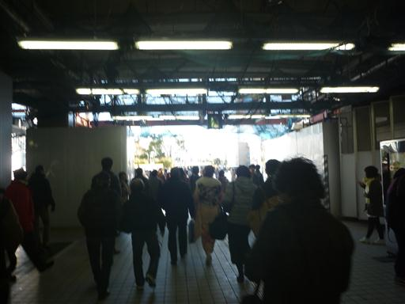
駅を出ると目の前にランドマークタワーが聳えている。
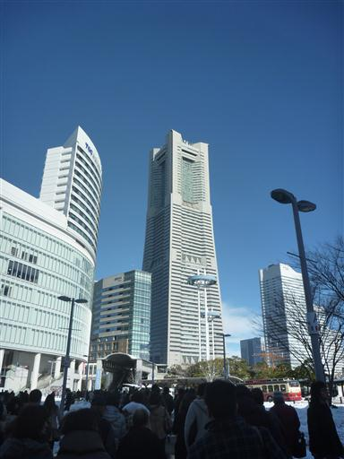
周囲はまだ雪が積もっている。
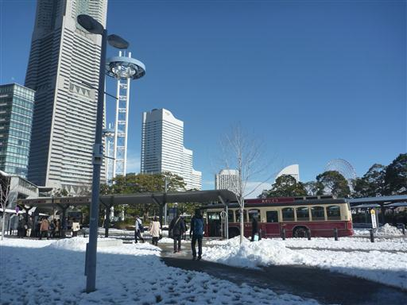
下から見上げるランドマークタワー。
296mの高さを誇るが、どっしりとした造りのため、そこまで高くは感じない。
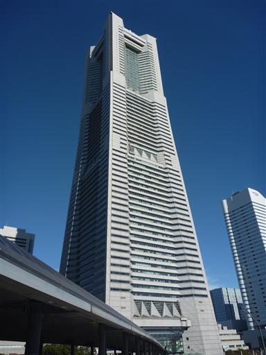
ランドマークタワーの隣には帆船日本丸が展示されている。
1984年まで使われていた航海練習船で、美しい姿の船として知られている。
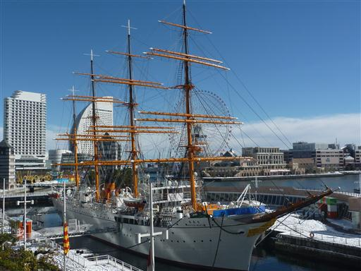
動く歩道に乗ってランドマークタワーの中に入っていく。
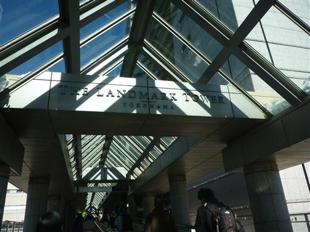
ほとんどの人は商業施設に向かい、展望台エレベータの方はガランとしている。
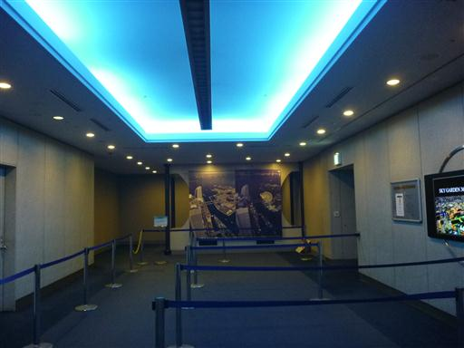
エレベータに乗って69階まで移動。
最高速度45km/h、たった40秒で69階展望台フロアに到着する。
エレベータからの展望がないのが少々残念だ。
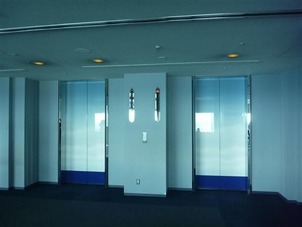
展望台からは素晴らしい眺めが得られる。
横浜港と正面に横浜ベイブリッジが見える。
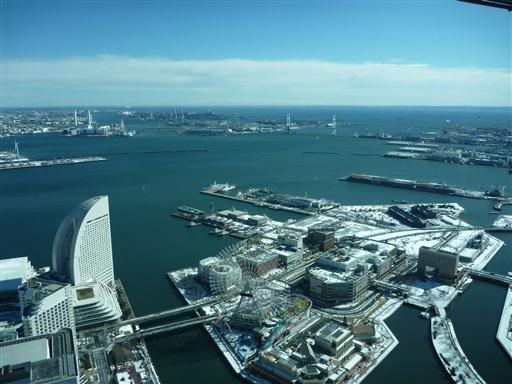
東京都心方面。スカイツリーが良く目立つ。
左端には東京タワー、真中には筑波山が見えている。
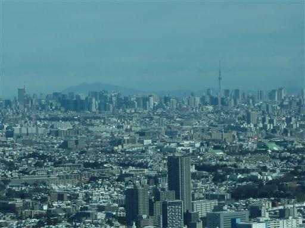
みなとみらいの街並み。三角や丸など変わった形のビルが建っている。
比較的新しい建物が多い。
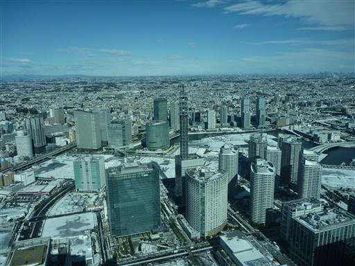
100mを超す超高層ビルもすべて眼下だ。
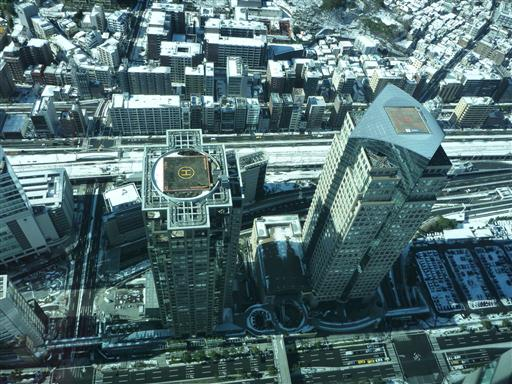
富士山と丹沢山地。雪が降ったばかりなので真白だ。
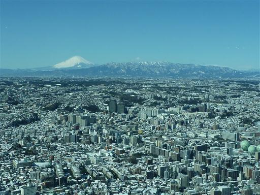
遠くに陽の光を反射する東京湾。
今日は空気が澄んでいるため房総半島も良く見えている。
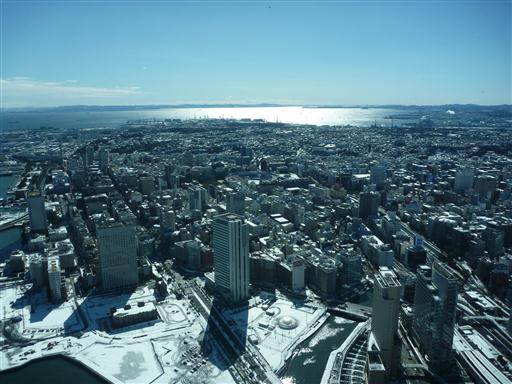
駐車場には雪の上にぐるぐる模様が描かれている。
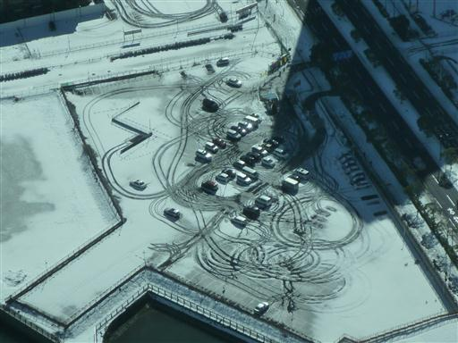
展望台フロア内部の様子。4方向に窓が設置されている。
足元に台があるため、子供には少々景色が見にくい構造になっている。
初めは空いていたが昼が近づくにつれて少しずつ人が増えてきた。
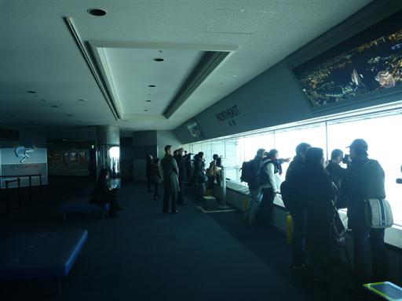
展望を堪能したらレストランに向かう。
ランドマークプラザはできて20年ほど経つが、比較的きれいに保たれている。
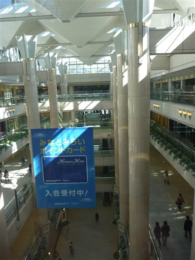
本日の昼食はガーリックジョーズで。ニンニク料理の専門店だ。
娘は料理を待っている間、展示されている野菜の模型で遊んでいる。
昼食をとったら遊園地を抜けて横浜赤レンガ倉庫に向かう。
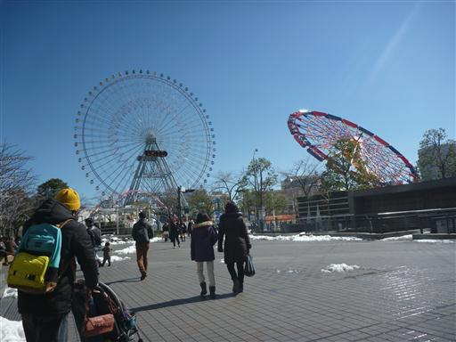
30分ちょっとで到着。辺りは雪が解けて水浸しだ。
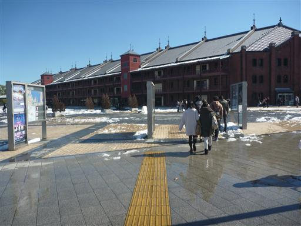
1911年竣工で1989年まで倉庫として使われていた。
その後改装され、今では飲食店や雑貨屋が並んでいる。
非常に趣のある建物だ。
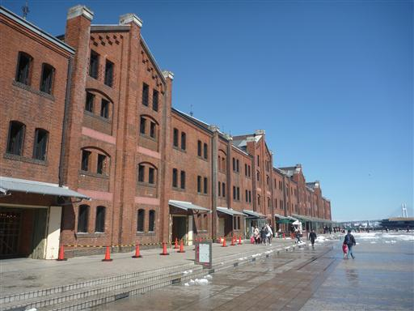
帰りは汽車道を歩く。鉄道廃線跡につくられた遊歩道だ。
こちらは除雪されていないため、雪だらけでよく滑る。
山には行けなかったが素晴らしい展望を堪能できた一日だった。
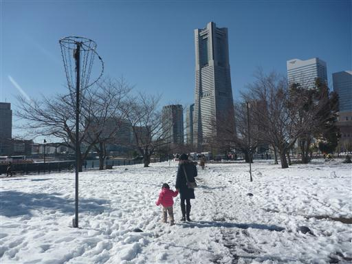